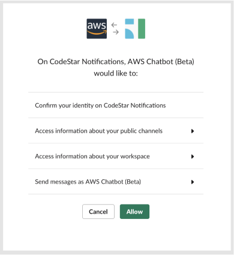

AWS Codestar Platform notifications
2019 - 2021
Notifications is a key part of using the AWS platform of developer tools. If something like a build or pipeline has an issue, you would want the developer to be aware of this as quickly as possible to fix the problem. The team wanted to build a tool that allowed off-platform notifications to meet the user on their messaging platform of choice such as as a part of their Slack channel.
01. Problem
Having a central notification across the many Developer tools in AWS would centeralize where developers would receive
messaging. The goal was to have one single place to create and manage these notification triggers and end points. What would set
off a notification and where that notification would be sent to.
The types of developer users we were targeting were members of a development team who wanted to be up-to-date on the
status of their projects and the DevOps team member who would be managing any pipeline and deployment issues.
We first looked at existing industry examples of notification centers and what types of affordances would be familiar for developers as a starting point. This included looking at the end-to-end solutions and what decisions and trade-offs the platforms decided on.
The key flows that we wanted to cover were the creation and management of Notification rules. Some of the stretch goals ideas we explored were to have a daily summary digest sent once, having a manager adjust who on the team would recieve notifications, and additional integrations with different services.
02. Design
The design of this was done to the spec of AWS' Polaris design system. This allowed quick prototyping as we could use pre-existing components to quickly mock up what potential flows and interfaces could look like.
The design we landed on for notification rule creation was a simple 4 section page that asked the basic requirements for the rule.
1. The name of the notification rule
2. The type of event(s) would trigger the notification
3. The target where we would send the notification
4. And how much detail the user wanted to surface (detailed or partial) for the notification message.
One of the more complicated parts of this flow is the set up of "Targets".
1. To make notifications work, we'll need to specify which type of target the user is setting up, SNS topics or AWS Chatbot (for Slack integration)
2. If you don't have a SNS topic or AWS Chatbot set up, the user will need a way to set up in flow without disrupting the notification steps.
3. We'll need a way to display and search through existing SNS topics and AWS Chatbots if the user / user's team have some already set up.
4. And finally we'll need a way for the user to manage which Targets are valid for use for AWS CodeStar notifications.
From our trials and prototypes we found that this was an area where users could potentially be stuck trying to figure out how targets worked. For example SNS topics required that users create a topic token in a separate app before it could be used in AWS CodeStar notifications.
This is the design of the management page where users can manage both the notification rules and notification targets. Hirarcharily this screen is placed under the Settings section of Developer tools as it was created to span across multiple services and tools.
03. Setting up Slack notifications
Setting up Slack notifications was great as an "Ah-ha" moment when we share with stakeholders and other teams. Having the end result of a failed build or stuck pipeline show up immediately in the Slack app really showed the potential and speed that the users were looking for.
The main issue with Slack intergration vs. just using AWS SNS topics was there were a few more permissioning that was required and added extra steps to the set up.
Since we've design this with the idea of reusability and cross-tool function as a key tenant, once set up, the user could create more notifcation rules to suit their needs without having to set up Slack integration again.